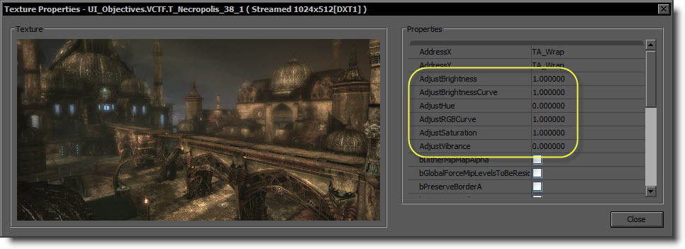
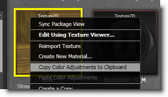
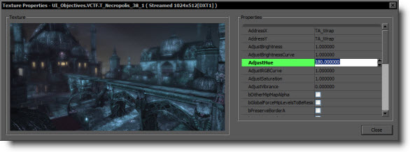
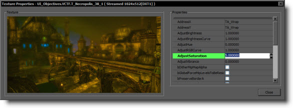

UDN
Search public documentation:
TexturePropertiesCH
English Translation
日本語訳
한국어
Interested in the Unreal Engine?
Visit the Unreal Technology site.
Looking for jobs and company info?
Check out the Epic games site.
Questions about support via UDN?
Contact the UDN Staff
日本語訳
한국어
Interested in the Unreal Engine?
Visit the Unreal Technology site.
Looking for jobs and company info?
Check out the Epic games site.
Questions about support via UDN?
Contact the UDN Staff
贴图属性
- 贴图属性
- 概述
- 贴图信息
- 属性
- Color Adjustment Settings（颜色调整设置）
- MipGenSettings（Mip 生成设置）
- AddressX/Y
- SRGB
- UnpackMin/UnpackMax
- CompressionNoAlpha（在不使用 Alpha 情况下压缩）
- CompressionFullDynamicRange（在完全动态的范围压缩）
- DeferCompression（延迟压缩）
- NeverStream（不进行动态载入）
- CompressionSettings（压缩设置）
- Filter（滤镜）
- LODGroup
- LODBias
- Num Cinematic Mip Levels（过场动画 Mip 级别数量）
- SourceFilePath（源文件路径）
- SourceFileTimestamp（源文件时间戳记）
- 其他操作
概述

贴图信息
属性
Color Adjustment Settings（颜色调整设置）
以下属性允许您在没有修改实际的源图片情况下调整贴图的颜色。这些改变将会在压缩时应用。
注意您可以很容易地在不同贴图间传递这些设置！仅需右击贴图并选择 Copy Texture Adjustments to Clipboard（复制贴图调整到剪切板） ，然后选择一个或多个目标贴图，右击并选择 Paste Texture Adjustments（粘贴贴图调整） 。这样设置便被传递到所有的选中的贴图中。注意这个操作可能会占用一些时间，因为贴图可能需要重新被压缩。
AdjustBrightness（调整亮度）
通过和 HSV Value 分量中指定的值相乘来缩放材质的亮度。值大于 1 将会增加图像的亮度，而值小于 1 将会降低图片的亮度。您可以输入您想输入的任何数字，但是最后的V值必须在 0.0 到 1.0 区间内（每个像素）。这项的默认值为 1.0。 上面的图片修改设置 AdjustBrightness（调整亮度） 为 5。
上面的图片修改设置 AdjustBrightness（调整亮度） 为 5。
AdjustBrightnessCurve（调整亮度曲线）
通过使用曲线来修改贴图的亮度。每个像素使它的 HSV Value 分量上升到指定的幂数。这项会使用幂函数曲线来非线性地缩放图像的亮度。比 1.0 小的值将增加图像的亮度，比 1.0 大的值则会降低图像的亮度。您可以输入您想输入的任何数字，但是最后的V值必须在 0.0 到 1.0 区间内（每个像素）。这项的默认值为 1.0。 上面的图像修改 AdjustBrightnessCurve 的值为 0.5 。
上面的图像修改 AdjustBrightnessCurve 的值为 0.5 。
AdjustHue（调整色度）
通过指定的角度数值 (0.0 - 360.0) 来沿着色环移动 HSV Hue(色度)分量来修改图像的色度。非常小的值只会稍微地影响您的图像的颜色，然而大的值可以激进地改变颜色。如果您使用大于 0.0 - 360.0 范围内的数值，那么色度将“自动回转”为那个范围内的一个数值。这项的默认值为 0.0。
上面的图片修改 AdjustHue(调整色度) 的值为 180.0 。AdjustRGBCurve（调整 RGB 曲线）
通过使用曲线来修改贴图的亮度。每个像素使它的线性空间 RGB 值上升为指定的幂数。这项会使用幂函数曲线来非线性地缩放图像的亮度。比 1.0 小的值将增加图像的亮度，比 1.0 大的值则会降低图像的亮度。您可以输入您想要的任何值，但是最后的值应该在区间 0.0 到 1.0 之间(每个像素)。这项的默认值为 1.0。 上面的图片将 AdjustRGBCurve 设置为 0.5 。
上面的图片将 AdjustRGBCurve 设置为 0.5 。
AdjustSaturation（调整饱和度）
通过将 HSV Saturation(HSV 饱和度)向量和指定的数值相乘来缩放贴图的颜色饱和度。值大于 1.0 则会提高饱和度，值小于 1.0 则会降低图像的饱和度。如果值为 0 则会导致灰度化图像。您可以输入任何您想输入的值，但是最后的 S 的值应该在区间 0.0 和 1.0 之间（每个像素）。这项的默认值为 1.0。
上面的图像将 AdjustSaturation 设置为 5.0 。AdjustVibrance（调整自然饱和度）
使用在 0.0 和 1.0 之间的值来调整贴图的饱和度。这项是应用一个自定义算法来尝试提高本来就不饱和的颜色的饱和度。当您想使贴图的不饱和部分和其它的已饱和的像素相匹配时，这项是有用的。这项的默认值为 0.0。 上面的头像已经将 AdjustVibrance 设置为 1.0 。
上面的头像已经将 AdjustVibrance 设置为 1.0 。
MipGenSettings（Mip 生成设置）
 该选项可以定制 mip-map 链的内容布局。这个“简单平均”与在提供这个设置之前使用的老方法工作原理相似（将 4 个像素/贴图像素的内容平均为 1 个）。不幸的是，使用 mip-map 会减少贴图细节。为了中和 mip-映射引入的模糊效果，可以在向下采样的过程中对图像进行锐化，重新存储一些丢失的信息。对有限范围内的数量（这个值最高可达 4 或 5）适用，它可以帮助提高图片质量，不会损失性能或消耗内存。使用强烈的锐化（大于 6 的值）可能会造成图片内容周围出现或暗或亮的边界，这种现象在特定情况下是可以接受的（根据美术风格和贴图内容而定）。
通常您可以在从存储在全局 INI 文件中的贴图组中获取实际的 MipGenSetting 时将这个设置保留为 "FromTextureGroup"。下面是在 "DefaultEngine.ini" 中的相关内容：
该选项可以定制 mip-map 链的内容布局。这个“简单平均”与在提供这个设置之前使用的老方法工作原理相似（将 4 个像素/贴图像素的内容平均为 1 个）。不幸的是，使用 mip-map 会减少贴图细节。为了中和 mip-映射引入的模糊效果，可以在向下采样的过程中对图像进行锐化，重新存储一些丢失的信息。对有限范围内的数量（这个值最高可达 4 或 5）适用，它可以帮助提高图片质量，不会损失性能或消耗内存。使用强烈的锐化（大于 6 的值）可能会造成图片内容周围出现或暗或亮的边界，这种现象在特定情况下是可以接受的（根据美术风格和贴图内容而定）。
通常您可以在从存储在全局 INI 文件中的贴图组中获取实际的 MipGenSetting 时将这个设置保留为 "FromTextureGroup"。下面是在 "DefaultEngine.ini" 中的相关内容：
... TEXTUREGROUP_WeaponSpecular=(MinLODSize=128,MaxLODSize=512,LODBias=0,MinMagFilter=linear,MipFilter=point,MipGenSettings=TMGS_Sharpen_0) TEXTUREGROUP_World=(MinLODSize=256,MaxLODSize=1024,LODBias=0,MinMagFilter=aniso,MipFilter=point) TEXTUREGROUP_WorldNormalMap=(MinLODSize=256,MaxLODSize=1024,LODBias=0,MinMagFilter=aniso,MipFilter=point,MipGenSettings=TMGS_Sharpen_1) TEXTUREGROUP_WorldSpecular=(MinLODSize=128,MaxLODSize=512,LODBias=0,MinMagFilter=linear,MipFilter=point,MipGenSettings=TMGS_Sharpen_2) ...该设置是使用关键字 "MipGensettings" 进行定义的，而且这个值与贴图设置中显示的名称相同（例如，"TMGS_Sharpen_2"）。如果没有指定，使用默认设置 "TMGS_SimpleAverage" 。 注意： 建议为所有颜色贴图定义一些 mip 锐化（例如，TMGS_Sharpen4）。法线贴图或其他没有存储颜色的贴图可能乍一看也会有更多的细节，但是实际上效果会更差（例如，变形的表面法线、锯齿高光）。在更改 ini 文件中的设置时，所有之前的贴图仍然具有以前的设置，然后使项目处于一致的状态，同时看到在所有贴图需要进行重新导出的地方这个设置的实际效果。在项目后期，可能需要一些时间和人力。 详情： 该选项允许在生成 mip-map 的时候自定义在向下取样的过程中使用的过滤器 kernel 大小和过滤器 kernel 的权重。 Mip-map 生成将会在导入贴图的过程中进行，同时为这个贴图创建一个 mip-map 链。这个 mip-map 链由多个样本图片等级组成，其中每个等级是以前等级分辨率的一半。该数据允许显卡在使用较低 mip（内存带宽较少）时更快地进行渲染，与此同时还会减少贴图锯齿现象（闪烁），这种现象会在特定距离对贴图进行细分的时候变得明显。该设置在运行时对性能没有影响，因为它只会影响 mip-map 生成（在导入的过程中火在更改这个设置的时候）。"SimpleAverage" 使用一个 2x2 的 kernel，所有 "Sharpen..." 使用一个 8x8 的 kernel 和一些负权重进行锐化。"Sharpen0" 没有进行锐化，但是使用还是所有 "Sharpen..." 使用的质量向下采样过滤 (4x4 Gaussian kernel)。与 "SimpleAverage" 相比，它看上去更加模糊，但是质量更高。在使用颜色内容的时候，锐化不会单独对颜色通道进行处理。然后按照定义的进行亮度调整，同时在没有进行锐化的情况下向下采样色度（颜色）信息（当前 2x2，但是 4x4 Gaussian 可能效果会更好）。这样可以避免在某些极端的情况下颜色发生变换。锐化还可以帮助改善 DXT 压缩方法，因为细微的颜色着色压缩方法具有局限性。
AddressX/Y
贴图的寻址方式。或者是 wrapping(自动回转)(TA_Wrap)、clamping(区间值) (TA_Clamp)或 mirroring(镜像) (TA_Mirror)。SRGB
控制贴图是否应该执行 gamma 校正。为了使您创作的正常的漫反射贴图和基本上您所创作的任何东西显示为颜色值，这项应该设置为 TRUE。通常当贴图颜色值有特殊意思的情况时以及您希望这些值就是像它们设置的那样比如通过代码设置时才禁用此项。法线贴图应该设置这项为 FALSE，因为它们的颜色值被解释为一个方向，因此不需要进行 gamma 校正。UnpackMin/UnpackMax
贴图“解压缩”的范围。默认值为 0 到 1，这个值为 0 对应的是黑色，1 对应的是白色。如果您想使贴图超亮度，您可以将 Max 设置为一个较高的值。法线贴图要求这个范围是 -1.. 1，并且如果您选择了合适的压缩设置，这个值是自动设置的。CompressionNoAlpha（在不使用 Alpha 情况下压缩）
是否可以不再使用 alpha 通道。当您的 alpha 通道中包含着您不关心的数据时您便会启用此项，因为它可以使贴图占用的内存仅是不启用此项时的一半。CompressionFullDynamicRange（在完全动态的范围压缩）
如果启用，RGBE 贴图将不会受到范围限定，但将会使用更多的内存。DeferCompression（延迟压缩）
当 导入/调整 贴图时是否延迟压缩直到保存时间允许更快的迭代时间。NeverStream（不进行动态载入）
如果设置这项，贴图将永远不会被动态载入。这是引擎限制项的临时解决方案。CompressionSettings（压缩设置）
TC_Default
正常贴图，漫反射贴图，…TC_Displacementmap
地形置换贴图TC_Grayscale
灰度化贴图TC_HighDynamicRange
高动态范围贴图，需要使用浮点导入器将其导入为 RGBE。TC_Normalmap
TC_NormalmapAlpha
TC_NormalmapUncompressed
TC_NormalmapBC5
请查看法线贴图格式文档来获得关于法线贴图格式及压缩选项的更多信息。Filter（滤镜）
当对该贴图进行采样时所使用的贴图过滤方式。LODGroup
针对 LOD bias（LOD偏移量）来说这个贴图所属于的贴图组。LODBias
基本上是指在上传贴图前所下降的 miplevel 的数量。这个值可以为负，补偿某个特定贴图的 LODGroup 的 LOD 偏移。将 LODBias、LODGroup 的 LOD 偏移和 NumCinematicMipLevel 都加在一起，构成这个贴图的最终 LOD 偏移值。在游戏过程中无法达到 mip 级别，因为它的 LOD 偏移将会被虚幻前端从磁盘上的哄哄配数据中移除，以此节省磁盘空间。Num Cinematic Mip Levels（过场动画 Mip 级别数量）
它可以指定应该保留供过场动画使用的最高分辨率 mip 级别数量，前提是在这个贴图使用过场动画质量强制载入的情况下（请参阅 StreamInTextures Kismet 动作）。 在游戏正常运行的时候，该属性会像常规的 LOD 偏移一样运转：值为 1 可以使贴图在游戏中的分辨率减少一个 mip 级别。但是，在激活 StreamInTextures Kismet 动作并将相应的贴图组设置为过场动画质量的时候，会动态载入过场动画高分辨率 mip 级别。